LG G2 review
LG G2 review
| Home | History Of smartphones | Reviews | Best cameraphones | Best smartphoes of 2013 |
Galaxy S4 review
How do you upgrade the best-selling Android phone of all time?
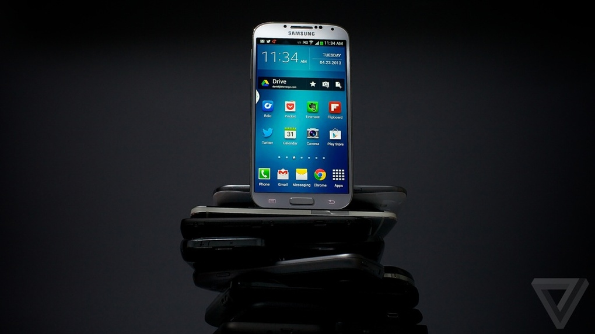
Years ago, people either bought an iPhone or 'a Droid." Verizon's marketing power, those insane robot ads, and maybe that just-close-enough naming convention made the carrier's Android phones virtually synonymous with their operating system.
But now I hear people every day saying "Oh, is that the new Galaxy?" or "I don't really want an iPhone. I think I'm going to get a Galaxy." Thanks to its high quality and wide availability, not to mention Samsung's sheer brute-forcing marketing effort, the Galaxy S III became the face of the Android universe. It has sold tens of millions of units, and helped Android take huge marketshare away from the iPhone. Now Samsung's back with that device's successor, the Galaxy S4. The new handset changes little from the GS III, but it adds a lot ' a bigger screen, and a laundry list of software tweaks and features. It's a variation on a theme, a safe tweak to a strategy that's worked impossibly well for Samsung.
But the landscape has changed since the Galaxy S III came out, and good cameras, big and beautiful screens, and fast performance now come virtually standard. The Galaxy S4 comes into a fiercely competitive market, with great phones on all sides and a particularly strong showing from the HTC One ' is it enough of an improvement to keep Samsung atop the Android heap? I've had one for a week or so, and I have a few thoughts on the subject.
Some things never change
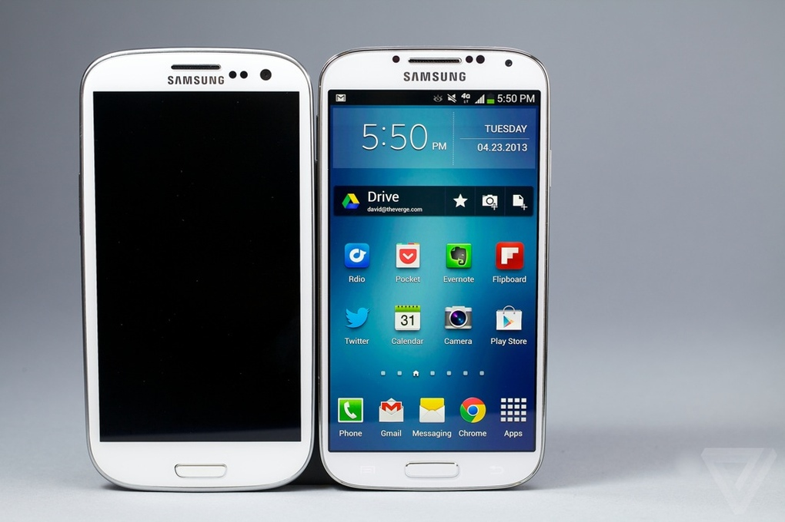
CAN WE FINALLY DECIDE
DESIGN MATTERS?
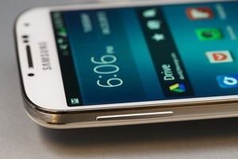
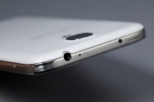
The GS4's primary competitors are the iPhone 5 and the HTC One, and from a pure design perspective that should make Samsung very, very nervous. Where Apple and HTC have both made beautiful, well-made, high-quality phones, the GS4 has Samsung back in the land of cheap, plasticky handsets. It looks for all the world like the Galaxy S III ' despite having a bigger screen and more horsepower, at 7.9mm and 4.6 ounces it's actually imperceptibly thinner and lighter than the S III. But copying the S III wasn't a good idea.Samsung could have been a lot more competitive in this area as it is in the other areas.Design is the the first impression of a phone and it is verry important to attract customers .
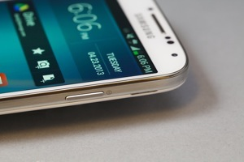
I don't like holding this phone, and I can't overstate how much that informs the experience of using it. It makes an awful first impression, slippery and slimy and simply unpleasant in your hand. My white review unit is completely smooth and glossy, with a subtle checkered pattern that looks textured but is neither grippy nor textured anywhere on its body. Everyone I showed the GS4 to frowned and wrinkled their nose as if it smelled bad, before rubbing their fingers on the back of the phone and then handing it back to me ' that's the opposite of the standard reaction to HTC's One, which everyone wants to ogle and hold. That's going to be a huge problem for Samsung, because the GS4 and One are likely to be next to each other on store shelves, and at least on first impression there's absolutely no contest between the two.
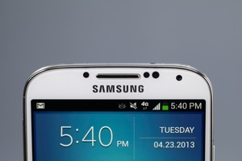
It's a shame, too, because Samsung didn't have to do it this way. The company made tradeoffs for a removable battery and a slightly thinner body, but I'm not sure those are features worth sacrificing so much for in 2013. It's not all bad: the GS4 is thin and light, and feels durable despite its cheap materials. It's also an improvement over the S III, thanks to slightly flatter edges and shrunken bezels. The port layout is smart: power button on the right, volume on the left, headphone jack up top and Micro USB on the bottom, with the SIM card, microSD slot, and battery accessible when you peel off the removable back. I'm thrilled the GS4 has a physical home button, with capacitive Back and Menu keys on either side. It's very comfortable for such a large phone, but I can't get over the gross feeling I get holding it.
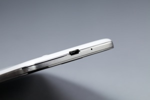
Samsung's proven repeatedly that people don't care about build quality, or at least will overlook it in favor of features and performance, but the landscape's different now. The HTC One is a powerful, feature-rich device that is also beautiful and classy, while Samsung's handset feels like an overpowered children's toy. Samsung's feature list has to be awfully long to overcome that ' and it is, but I'll get there.
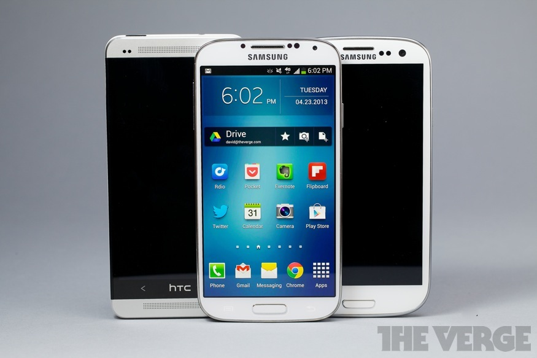
In living color
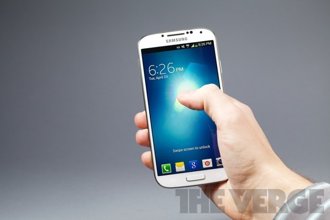
IT MAY NOT BE PERFECTLY
ACCURATE, BUT IT LOOKS
GOOD
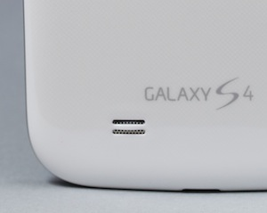
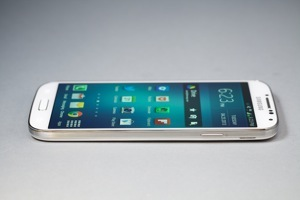
Through my entire time with the GS4, I kept imagining walking through a store and trying to pick a phone. Before even considering how Samsung can beat HTC, I wondered how such an apparently evolutionary change would convince users to upgrade from the S III, or to spring for the newer and more expensive model when the GS III is still a solid choice.
The answer's simple, and luckily for Samsung it's also immediately obvious. It's the screen. The GS4's 5-inch, 1920 x 1080 display is big, beautiful,
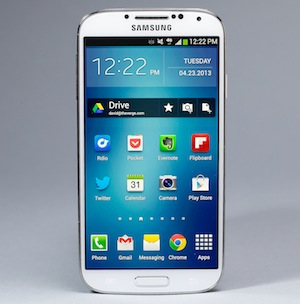
and seriously eye-catching. The latter is partially a bad thing: the S4 uses a Super AMOLED panel like many of Samsung's phones, and like many of Samsung's phones it displays overly contrasted and vibrant colors. Those colors may not be accurate ' reds and oranges absolutely explode off the screen, whether they should or not ' but they certainly catch your eye. And with a ridiculous 441-pixels-per-inch, even the PenTile display matrix I usually loathe causes no problems. The glass is rigid and responsive to touch, and works even if you have gloves on ' which I shouldn't have needed to test in April in New York City, and yet here we are.
For some reason, Samsung has always had trouble with screen brightness settings ' the GS4 can never seem to decide how bright its screen should be, changing suddenly and drastically often and without warning. I turned automatic brightness off very quickly.
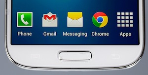
I tried to pick my favorite between the One's display and the GS4's, and wound up going back and forth a dozen times before giving up. Both are incredibly high-res, bright, and crystal clear; the One is slightly more accurate, but I still periodically forget my nitpicking and get lost in the GS4's vibrant colors. You really can't lose, and that's pretty great.
The lone speaker on the Galaxy S4 resides on its backside, in that wonderfully unconsidered spot where audio is both muffled by your hand and blasting directly away from your ears. Once again, HTC broke the curve by offering two big, powerful speakers pointed straight at your face ' but the One aside, the GS4 offers surprisingly loud sound from rear-facing grille. It's not very rich and is very compressed, but it's loud. Loud is good.
The camera Instagram deserves
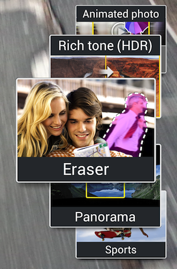
While HTC is trying to convince buyers that megapixels don't matter, and that its so-called Ultrapixels are better anyway, Samsung went the opposite direction. I don't know if all the pixels in the Galaxy S4's 13-megapixel sensor are the reason, or if I should credit Samsung's fast processor or the clear attention paid to its software, but the upshot is that the GS4's camera is the best Android camera I've ever used by a considerable margin, and in most cases it's every bit as good as the iPhone 5's camera.
However, the One and the Nokia Lumia 920 do considerably better than the GS4 in poor lighting. When it's dark, the GS4 takes the same soft, noisy pictures as any other smartphone camera, but without the incredible brightness capabilities of the One ' there are pictures you'll get with the One or the 920 that the GS4 just can't capture. The GS4's autofocus stumbles in low light, too; I learned quickly to take three shots at night, in order to get one that was properly focused.
It's actually Samsung's experience with dedicated cameras that make shooting photos with the GS4 so nice. The company borrowed a lot of the GS4's camera software from the Galaxy Camera, a concept car of sorts that clearly informed its ability to build a great cameraphone. The interface is much improved over the S III, from the scrolling Mode dial to the one-press capture of either stills or video. It's also simple and fast, two things many cellphone cameras are not.
The GS4's greatest photographic achievement, though, is that it manages to be simple and fast while simultaneously offering the largest, most impressive feature set of any smartphone camera I've ever used. If you're just turning the phone to Auto and firing pictures, you're missing out. Instead, you should try turning it to Eraser Mode, which detects moving objects in your photo ' like the stranger that always walks by right as you take the shot ' and automatically removes them. Or scroll up to Drama Shot, which takes a series of pictures as a subject moves and then shows a whole leap, or the soccer ball's whole flight path, in one automatically-overlaid photo. Animated Photo lets you take a few seconds of video, then choose with your finger whether a part of the frame is still or in motion ' you can actually create and share animated GIFs without ever leaving the camera app. Some of the more advanced features require some staging ' and Drama Shot sometimes takes a couple of tries ' but they're all pretty cool.
All except for Dual Camera, which despite Samsung's heavy promotion remains a mystery to me. The pitch is simple enough: you take a picture with both front and rear cameras simultaneously and overlay one on the other, so the person taking the picture appears in the picture as well. It's a neat idea in theory, but in practice left me just superimposing giant versions of my head onto random buildings, inside weird postage-stamp borders or within a heart. It's a fun, silly way to take an "I'm in New York!" selfie without turning the camera on yourself, and maybe that's enough, but it's still a little odd that Samsung is putting so much marketing muscle behind such a niche feature.
There are a lot of trees in this forest, some of them less than perfect, but taken as a whole the Galaxy S4's camera is a triumph. If it supplants the many terrible Android cameras posting to my Instagram feed, we'll all be better off.
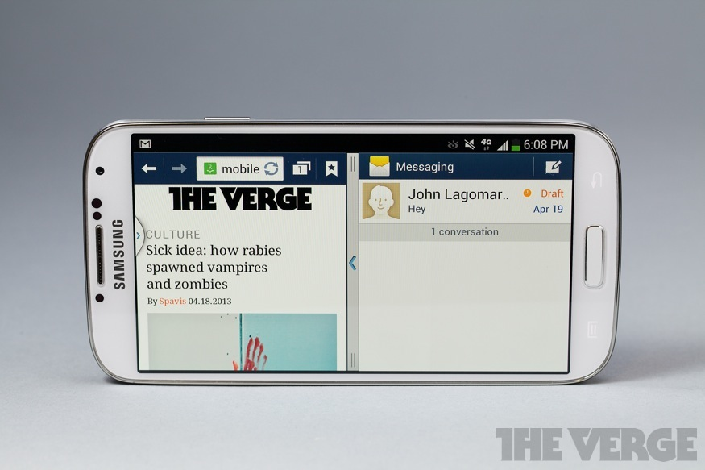
What comes after the kitchen sink?
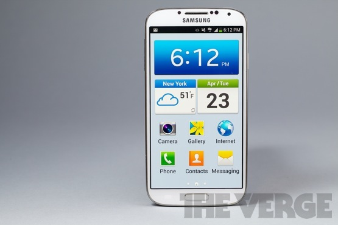
THE GALAXY S4 HAS A
LOT GOING ON ' MAYBE TOO
MUCH
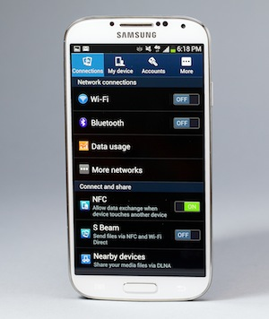
Speaking of forests with lots of trees: the GS4 may run Android 4.2, but Samsung has heaped so many features on top of Google's operating system that it almost feels like something entirely different. Normally I'm conditioned to believe
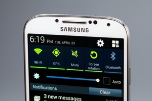
stock Android is better than any manufacturer skin, but Samsung overhauls the software so completely that I'm less annoyed than I would be with a company like Motorola or LG, where the changes are typically a combination of aesthetic, problematic, and pointless. Some of Samsung's added features are all three, but many are downright useful.
To start, the GS4 keeps all the features Samsung has debuted on various Note models and the Galaxy S III. Samsung pioneered the radio and connectivity toggles in the notification windowshade,and the GS4 offers access to more and more settings there, including a brightness slider. Samsung's big clock-and-weather widget comes on the
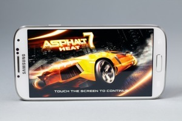
home screen by default, and the general Touchwiz look and feel remains intact. The green-on-blue-on-gray scheme is growing on me, but Samsung's hideous Calendar app never will; likewise many of the Phone menus and screens look cartoonishly terrible, with huge icons and ugly images.
What Touchwiz mostly offers is options: with a bit of effort, the GS4 can look and feel almost any way you choose. You can hide or rearrange apps in the app drawer, pick and choose quick-launch apps for the lock screen, change the order of settings and toggles, and much, much more. There's even an Easy Mode on the GS4, which turns your phone into something like John's Phone: it presents a simple dialer, shortcuts to a few common apps, huge icons for everything, and hides almost everything else. Samsung probably should've taken this as a sign, because if your phone needs Easy Mode you're probably doing something wrong, but it does at least do a nice job simplifying everything the GS4 has going on.
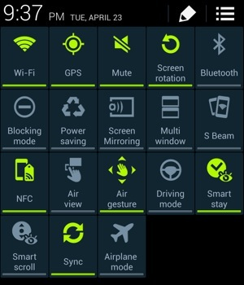
And boy, is there a lot going on. There are now 18 (yes, 18) toggles in the notification pulldown, which you can see by pressing a new button at the top right ' it opens up a command center of sorts, which lets you turn off everything from Wi-Fi and Bluetooth to some of the wilder eye-tracking features. I kind of wish there were a Medium mode that would take away all the Minority Report stuff, and just leave a more normal Android phone.
I'll never forget Samsung's launch event for the GS4, a bizarre spectacle at Radio City Music Hall where actors went through feature after feature, explaining how they work together to make the GS4 your "Life Companion." Some of Samsung's additions fit this bill a little more closely than others. S Health is the best example of an actual Life Companion ' it's a Fitbit- or FuelBand-style app that tracks your steps, calories, sleep, and diet, offering you a way to get fit (or in my case just provide more data about my pathetically sedentary lifestyle). It's handy to have built right into your phone, and the app's pretty powerful thanks to the S4's temperature and humidity sensors ' you can actually tell it how you feel, and it'll figure out how you should adjust your surroundings to feel better. S Health is a great tool, though it won't be as good as it could be until its companion accessories come out in a few months' time.
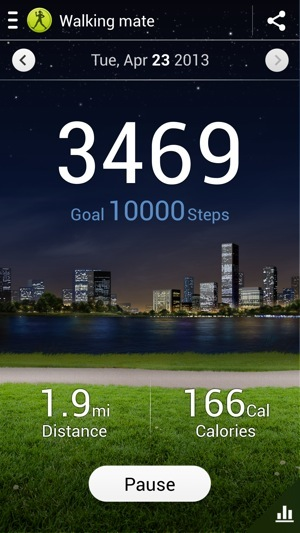
My aforementioned sedentary lifestyle is also probably to blame for why I used WatchOn, Samsung's handy universal remote and search-based TV guide app, far more than S Health. It's a great app, offering quick and easy control over your whole home theater setup via the IR blaster on top of the GS4, plus the really clever Peel-made search and recommendations interface across your cable box, Netflix, Blockbuster, and other services. More than anything, it's just convenient ' I tend to have my phone in my hands while I watch TV anyway, so switching to WatchOn to change the channel is light work.
There's a full-fledged suite of Office products via the Polaris suite, though I can't say there's any way to make editing a PowerPoint on your phone a pleasant experience. There's also a built-in translator app ' I bet you can guess it's name ' plus a handy tool for scanning business cards and QR codes. Carriers (in my case T-Mobile) also add some bloatware, though Samsung lets you hide most of the apps you don't want from the drawer ' yet again, the GS4 is an incredibly malleable phone. It just takes some work to get it the way you want. You can even run two apps at once, side-by-side with a system just like the Note 8.0's, which works surprisingly well on a smaller screen because there are just so many pixels to play with.
I like the apps and services Samsung adds to the Android experience here, but I'm less enamored with all the ways Samsung has reimagined how you'll want to actually interact with your cellphone. These features were touted heavily on the GS III despite the fact that I never once saw a regular person using S Beam or AllShare, and the trend continues unabated with the S4.
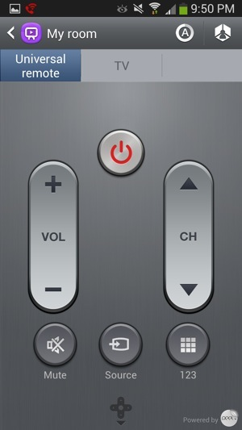
The hand waving software is more useful ' sometimes. There's Air View, which approximates the Galaxy Note's ability to recognize when you're hovering over the screen with the S Pen and unearth content without making you tap, but requires only your finger. It's handy for previewing an email without opening it, or seeing stories in Flipboard, but not much else, and it requires precision to hover a centimeter away from your target ' I wound up accidentally tapping on the screen half the time anyway.
Air Gestures has me completely torn. It's really impressive, letting you wave your hand over the phone to scroll up and down a webpage or flip through a gallery, and it works reliably once you figure out your hand has to pass over the top of the phone, where the IR sensor sits next to the earpiece. I started using it while my hands were wet, or if I had something in my hand. (Sadly it doesn't work with Pocket, so I can't wave my coffee-filled hand over the phone to flip pages while riding the subway.) It's overly sensitive, though, and will often scroll back when you're just moving your hands around. It also tended to jump as I was pointing something out or showing someone a photo, which became a pain. I wound up leaving both Air View and Air Gestures on, mostly just to show people how cool they are ' and because I love that I can wave at my phone to change songs.
The list goes on and on, really, with Samsung offering features galore that you'll probably never use. The Story Album app lets you create scrapbooks from your photos, though there are plenty of third-party apps that do it better. Group Play is like AllShare on steroids ' you can have everyone listen to the same song at the same time, play a game together, or all look at a slideshow,
EYE TRACKING AND
HAND WAVING
except everyone has to have a GS4 and jump through a bunch of hoops to get it all working. Of course there's also S Beamand NFC, plus a forthcoming security feature called Knox that separates your personal information from your work data ' handy if you're bringing your GS4 to work, mostly superfluous otherwise.
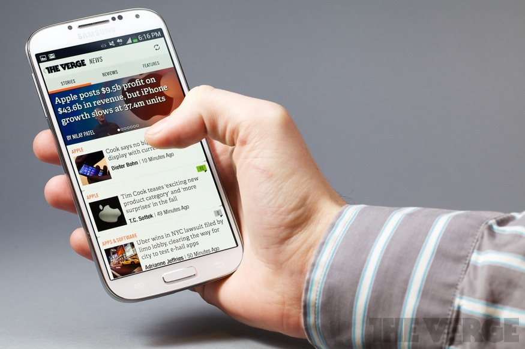
Still on the bleeding edge
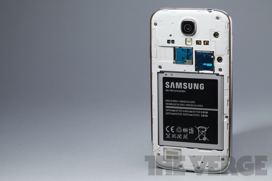
THERE'S NEVER A
SHORTAGE OF POWER
FROM SAMSUNG
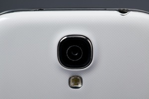
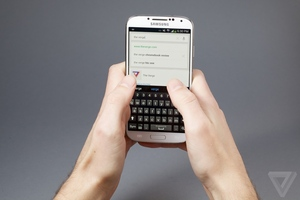
Much of what Samsung offers seems to be just for show, designed to give sales clerks something to demo that makes the GS4 unique. The best features get out of your way, but too many are simply obtrusive ' I wound up using the GS4 like I would any other phone, with most of the additional features off, and as much as I'd be thrilled to watch people waving at their phones on the subway, I'm not betting it catches on.
Samsung's Galaxy S lineup has never wanted for power, and neither does the Galaxy S4 ' it's an impressively fast and powerful phone, capable of handling anything I threw at it. I could get it to drop frames in Asphalt 7 or stutter ever so slightly when closing some apps, but only by turning on and turning up every conceivable feature on the phone ' and even then its stumbles are rare. Used more normally, once you've disabled some of the more obnoxious software features, it's virtually flawless.
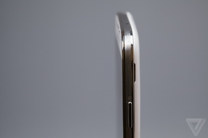
I say "virtually" because the phone does trip up occasionally, and only in surprising places like the Gallery, which sometimes freezes and crashes for no obvious reason. Samsung's software design is clearly to blame here, and it's the most lasting reason I still dislike software skins ' they just create problems Android doesn't otherwise have. But otherwise the 1.9GHz Qualcomm Snapdragon 600 processor and 2GB of RAM inside the S4 do every bit as well as you'd expect bleeding-edge specs to do. Some international markets are getting Galaxy S4s powered by Samsung's own Exynos processor, which should be even more powerful.
The phone's going to be available on every carrier on the planet, or at least Samsung makes it feel that way ' it's coming to all four major US carriers, plus a handful of smaller regional companies. I tested a device with T-Mobile, and while this device supports the company's brand-new LTE network (and its new, contract-free service plans) I didn't have a chance to test it because, well, T-Mobile's LTE network only works in Las Vegas. Reception and data speeds were normal for T-Mobile in New York City, and I'm looking forward to the bump when LTE comes on in Manhattan. Call quality was solid if unspectacular, though I very much appreciated the Extra Volume button that makes the other person just astonishingly loud in your earpiece ' construction zones and sirens be damned, you'll hear just fine.
My biggest frustration with the HTC One has always been its battery. It'll last a day, but only with a bit of hand-holding. If that's lower-middle class, I'd say the Galaxy S4 is upper-middle class: it lasts a full day almost no matter how I use it (unless I stream HD Netflix videos constantly, in which case it dies in about five hours), and will even get me to the morning if I forget to plug it in. I rarely forget to plug my phone in every night, and I don't mind needing to charge every night, but I'm so used to babysitting my iPhone 5 all day or watching the One's meter hit red that not having to worry about the GS4 all day was pretty wonderful.
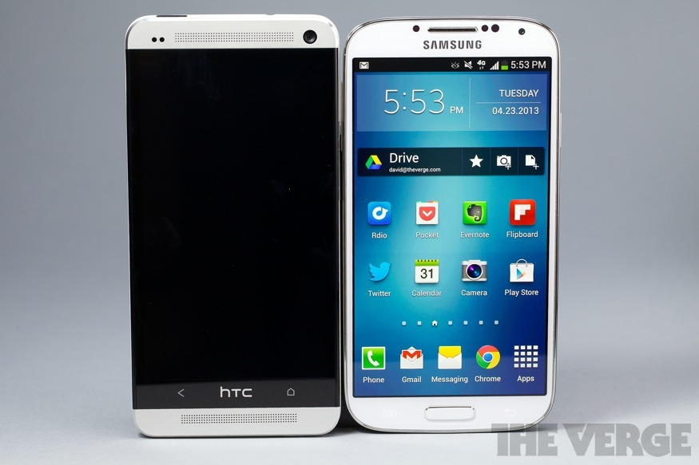
Wrap-up
Samsung Galaxy S4
.jpg)
- Fast and powerful performance Unpleasant, cheap design
- Excellent camera Sheer number of features can be overwhelming
- Gorgeous display Performance can suffer in odd places
- Lots of useful extra software
GOOD STUFF BAD STUFF
ALL THE TECHNOLOGY IN THE WORLD CAN'T COVER UP BAD DESIGN
I ended my HTC One review by saying there were two Android phones worth buying, the One and the Nexus 4. That number is now very clearly three, but I had hoped against hope that Samsung would emerge the undisputed winner. The Galaxy S4 is a very good phone in most respects ' it has a stellar camera and solid battery life, blistering performance and an impressively useful complement of software features. It's a technological achievement ' there's no question about that.
But part of what has me so excited about the smartphone market is that manufacturers are finally starting to step back from the relentless forward march of Moore's Law and spec races, and seek quality in other places. We've seen it in laptops, as companies like Toshiba finally turn away from racing to the pricing bottom and begin to build truly excellent ultrabooks; we're also seeing it in cellphones, from the HTC One and a small selection of other devices.
I don't need more cores, more gigahertz, or more software features that ostensibly help me use my phone more easily. I need a phone that feels good in my hand, looks good on my desk, does everything I expect it to, and gives me no reason to think it won't last the life of my two-year contract. I bought an iPhone 5 because last fall it was the only phone that fit that bill ' now there are several Android options as well, and they're good enough to make me want to switch back to Google's OS.
For now, it's a choice every buyer will have to make. You can have the far better-looking phone or you can have the slightly better-performing phone ' and you really can't choose wrong. If the GS III is any indication, millions upon millions will choose the GS4. Me? I think design matters. Polish matters. The Galaxy S4 is fast and impressive, but it's also noisy and complex. The One is refined, quiet, comfortable, beautiful, and above all simply pleasant. I love using that phone, in a way I haven't experienced with anything since the iPhone 5. That's why, when my contract is up in June, I'll probably be casting my lot with HTC instead of Samsung.